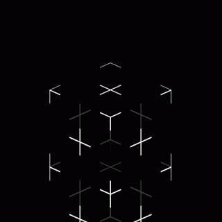
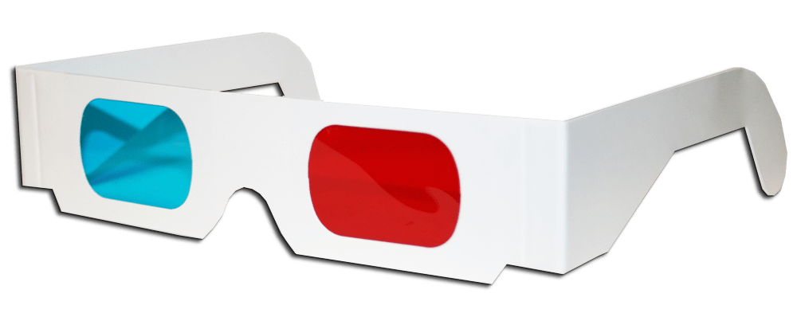
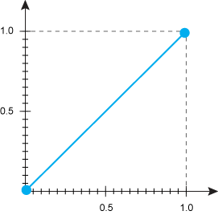
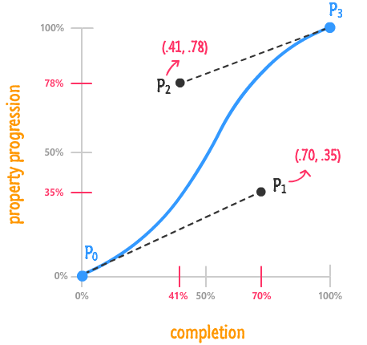

Анимации
Кувалдин Артем
Сначала был GIF
JS анимации
var foo = null; // object
function doMove() {
foo.style.left = parseInt(foo.style.left) + 1 + 'px';
setTimeout(doMove, 20); // call doMove in 20msec
}
function init() {
// get the "foo" object
foo = document.getElementById('superman');
foo.style.left = '0px'; // set its initial position to 0px
doMove(); // start animating
}
window.onload = init;CSS-анимации
Преобразования
На текущий момент нам доступны:
Перемещение
Масштабирование
Вращение
Наклон
Свойство transform
.box {
transform: тип_трансформации(значение);
}не влияет на окружение
Бокс 1
Бокс 2
Бокс 3
Бокс 4
Перемещение
.box {
width: 300px;
height: 100px;
/*transform: translate(X , Y );*/
transform: translate(100px, 100px);
}300x100
translate(300px, 100px)
translate(-300px, -100px)
translate(0, 100px)
translate(300px, 0)
Перемещение в %
.box {
transform: translate(100%, 100%);
}200x100
translate(100%, 100%)
translate(-100%, -100%)
translate(0, 100%)
translate(100%, 0)
.box-blue {
transform: translateX(100%);
}
.box-red {
transform: translateY(100%);
}200x100
translateX(100%)
translateY(100%)
Масштабирование
.blue {
/*Размер элемента = 150%*/
transform: scale(1.5);
}
.red {
/*Размер элемента = 50%*/
transform: scale(0.5);
}scale(1)
scale(1.5)
scale(.5)
Масштабирование
.blue {
/* scale(X, Y )*/
transform: scale(1, 1.5);
}
.green {
/*Размер элемента по оси X = 50%*/
transform: scaleX(0.5);
}
.red {
/*Размер элемента по оси Y = 50%*/
transform: scaleY(0.5);
}scale(1, 1)
scale(1, 1.5)
scaleX(.5)
scaleY(.5)
Отрицательные значения
.blue {
transform: scale(1, -1);
}
.green {
transform: scale(-1, 1);
}
.red {
transform: scale(-2);
}scale(1, -1)
scale(-1, 1)
scale(-2)
Вращение
.like {
/*Поворот элемента вокруг оси на 180°*/
transform: rotate(180deg);
}.like {
transform: rotate(-180deg);
}Другие единицы измерения
.like {
/*Полтора оборота по часовой стрелке*/
transform: rotate(1.5turn);
/*1.5turn = 540deg = 600grad ≈ 9,42478rad*/
}Наклон
.red {
transform: skew(45deg, 0); /*skew(45deg)*/
}
.green {
transform: skew(0, 45deg); /*skewY(45deg)*/
}
.blue {
transform: skew(25deg, 25deg);
}Множественные преобразования
.box {
transform: scale(2) translateX(100px) rotate(45deg);
}Box
Что будет?
.box {
transform: rotate(45deg) translateX(100px) scale(2);
}Box
rotate(45deg)
translateX(100px)
scale(2)
translateX(100px)
scale(2)
translateX(100px)
skew(45deg)
translateY(100px)
skew(45deg)
translateY(100px)
Исходная точка
.box {
transform: rotate(45deg);
transform-origin: left top;
/*transform-origin: 0;*/
/*transform-origin: 0 0;*/
/*transform-origin: 0% 0%;*/
}box 1
rotate(45deg)
transform-origin: 50% 100%;
transform-origin: right bottom;
transform-origin: 50px;
transform-origin: 0 100%;
3D
rotateX(360deg)
rotateY(360deg)
rotateZ(360deg)
translateX(100%)
translateY(100%)
translateZ(200px)
scale(2)
Перспектива
создает иллюзию глубины и позволяет перемещать в двумерном пространстве экрана точку вдоль и вокруг оси Z (как бы вглубь экрана и из него).

Перспектива
.3d_perspective {
perspective: 200px;
}Расположение точки
.3d_perspective {
/* по-умолчанию: perspective-origin: 50% 50%; */
}
.3d_perspective_lt {
perspective-origin: 0 0;
}
.3d_perspective_ct {
perspective-origin: 50% 0%;
}
.3d_perspective_rt {
perspective-origin: right top;
}transform-style
Сообщает о том что дочерние элементы позиционируются в 3D-пространстве.
.wrapper {
/*по умолчанию flat*/
transform-style: preserve-3d;
}
backface-visibility
Определяет видимость задней стороны объекта.
backface-visibility: visible;
backface-visibility: hidden;
Свойства transform
| 2D | 3D |
|---|---|
| translate(x,y) | translate3d(x,y,z) |
| scale(x,y) | scale3d(x,y,z) |
| rotate(angle) | rotate3d(x,y,z,angle) |
| matrix(a, b, c, d, e, f) | matrix3d(a,b,c,d,e,f,g,h,i,j,k,l,m,n,o,p) |
rotate3d(1, 1, 1, 180deg)
Матрица преобразований
.matrix {
/* matrix(a, c, b, d, tx, ty);*/
transform: matrix(2, 0, 0, 1, 0, 0);
}.matrix {
/* matrix(a, c, b, d, tx, ty);*/
transform: matrix(2, 0, 0, 1, 0, 0);
}| Коэффициент | Преобразование | Аналог |
|---|---|---|
| a | Изменение размера по горизонтали | scaleX() |
| b | Наклон по горизонтали | skewX() |
| c | Наклон по вертикали | skewY() |
| d | Изменение размера по вертикали | scaleY() |
| tx | Смещение по горизонтали в пикселах | translateX() |
| ty | Смещение по вертикали в пикселах | translateY() |

| Коэффициент | Преобразование | Аналог |
|---|---|---|
| a | Изменение размера по горизонтали | scaleX() |
| b | Наклон по горизонтали | skewX() |
| c | Наклон по вертикали | skewY() |
| d | Изменение размера по вертикали | scaleY() |
| tx | Смещение по горизонтали в пикселах | translateX() |
| ty | Смещение по вертикали в пикселах | translateY() |
Переходы
Переходы – это анимация от одного набора CSS свойств к другому. Для перехода необходимо:
- Два набора свойств:
- начальный набор свойств(color: #f00;)
- конечный набор свойств(color: #00f;)
- Свойство transition – описание свойств и характеристик анимации перехода
- Инициатор – действие, которое вызывает изменение от одного набора свойств к другому(:hover, :target, :focus, :active)
.button {
/*Свойство перехода*/
transition-property: transform;
/*Длительность перехода*/
transition-duration: .3s;
}
.button:hover {
transform: scale(1.2);
}Несколько свойств
.button {
transition-property: transform, background-color;
transition-duration: 0.3s, 300ms;
/* .3s, .3s ; */
background-color: #ccc;
}
.button:hover {
transform: scale(1.2);
background-color: #f00;
}Задержка перехода
.button {
transition-property: transform, background-color;
transition-duration: 0.3s, 500ms;
transition-delay: 0s, 0.5s;
background-color: #ccc;
}
.button:hover {
transform: scale(1.2);
background-color: #f00;
}Тип перехода
.button {
transition-property: transform;
/*функция положения объекта от времени.*/
transition-timing-function: linear;
transition-duration: 0.3s;
}
.button:hover {
transform: translateX(800px);
background-color: #f00;
}

transition-timing-function:
linear
ease
ease-in
ease-out
ease-in-out
step-start
step-end
steps(10)
steps(10, start)
Кривая Безье
P = (1−t)2P1 + 2(1−t)tP2 + t2P3
cubic-bezier.com
easings.net
.rocket {
transition-property: transform;
/* (x1, y1, x2, y2);*/
transition-timing-function: cubic-bezier(.98, 0, 1, .28);
transition-duration: 3s;
}Краткая запись
.long {
transition-property: transform;
transition-duration: .5s;
transition-delay: 1s;
transition-timing-function: ease-in;
}.short {
/* property duration [timing-function] [delay]*/
transition: transform .5s ease-in 1s;
}.multi-short {
transition: transform .5s ease-in,
background-color .5s ease-in 1s;
}.super-short {
transition: all .5s;
}Анимации
Свойство animation
Позволяет анимировать переходы между ключевыми кадрами.
Для создания анимации необходимо:
- Определить ключевые кадры - содержат свойства, которые применяются в определенный момент времени при анимации.
- Применение анимации к элементу.
Ключевые кадры
@keyframes animationName {
from {
/*css свойства для первого кадра*/
}
to {
/*css свойства для второго кадра*/
}
}.box.visible {
animation-name: show;
animation-duration: 2s;
}
@keyframes show {
from {
opacity: 0;
}
to {
opacity: 1;
}
}box visible
.box {
opacity: 0;
}
.box.visible {
animation-name: show;
animation-duration: 2s;
}
@keyframes show {
to {
opacity: 1
}
}box visible
.box1:hover { animation-name: blink;
animation-duration: 1s;
}
.box2:hover { animation-name: blink;
animation-duration: 5s;
}
@keyframes blink {
from {
background-color: blue;
}
to {
background-color: green;
}
}box 1 visible
box 2 visible
.box:hover { animation-name: blink;
animation-duration: 2s;
}
@keyframes blink {
from {
background-color: blue;
}
50% {
background-color: red;
}
to {
background-color: green;
}
}box visible
.box:hover { animation-name: blink;
animation-duration: 3s;
}
@keyframes blink {
0% { background-color: blue; }
25% { background-color: green; }
50% { background-color: red; }
75% { background-color: yellow; }
100% { background-color: grey; }
}box visible
.box:hover { animation-name: blink;
animation-duration: 10s;
}
@keyframes blink {
0%, 50% {
background-color: blue;
}
25%, 75% {
background-color: green;
}
100% {
background-color: grey;
}
}box visible
.box:hover { animation-name: blink;
animation-duration: 4s;
}
@keyframes blink {
0% {
background-color: blue;
}
25%, 75% {
background-color: green;
}
100% {
background-color: grey;
}
}box visible
.box.visible { animation-name: show;
animation-duration: 2s;
}
@keyframes show {
0% {
opacity: 0;
background-color: blue;
}
50% { background-color: green; }
100% {
opacity: 1;
background-color: red;
}
}box visible
Задержка анимации
.box.move {
animation-name: move;
animation-duration: 2s;
animation-delay: 1s;
}
@keyframes move {
25%, 75% {
transform: translateX(100%);
}
100% {
transform: translateX(200%);
}
}box visible
Тип анимации
.box.move {
animation-name: move;
animation-duration: 8s;
animation-timing-function: cubic-bezier(...);
}
@keyframes move {
0% { transform: translate(0, 0); }
25% {
transform: translate(100%, 0);
animation-timing-function: linear;
}
50% { transform: translate(100%, 200%); }
75% {
transform: translate(0, 200%);
animation-timing-function: linear;
}
100% { transform: translate(0, 0); }
}box visible
Повторение анимации
.circle:hover {
animation-name: zoom;
animation-duration: 1s;
animation-iteration-count: 3;
}
@keyframes zoom {
0% {
transform: scale(1);
}
100% {
transform: scale(2);
}
}hover me
Повторение анимации
.seconds {
animation-name: seconds;
animation-duration: 60s;
animation-iteration-count: infinite;
}
Скачки между повторениями
.circle {
animation-name: seconds;
animation-duration: 1s;
animation-iteration-count: 3;
animation-direction: alternate;
}hover me
Скачки после завершения
.circle {
animation-name: seconds;
animation-duration: 1s;
animation-iteration-count: 3;
animation-direction: alternate;
animation-fill-mode: forwards;
}hover me
Краткая запись
.long {
animation-name: scale;
animation-duration: 2s;
animation-timing-function: ease-in-out;
animation-iteration-count: 3;
animation-direction: alternate;
animation-delay: 5s;
animation-fill-mode: forwards;
}.short {
animation: scale 2s ease-in-out 3 alternate 5s forwards;
}.multi-short {
animation: scale 2s ease-in, move 2s ease-out;
}Управление анимацией
.b-heart {
...
animation: heartBeat 1s ease infinite;
}
.b-heart:hover {
animation-play-state: paused;
}Эффект печати
css is awesome
typing {
width: 0;
white-space: nowrap;
overflow: hidden;
border-right: 1px solid;
}
.typing.visible {
animation: typing 4s steps(15) forwards,
caret 1s steps(1) infinite;
}
@keyframes typing { to { width: 15ch; } }
@keyframes caret { 50% { border-color: transparent; } }
Движение по кругу

.circle.run { animation: spin 4s linear infinite; }
@keyframes spin { to { transform: rotate(1turn); } }Движение по кругу
Движение по кругу
.circle.run img {
animation: spin 4s linear infinite;
}
@keyframes spin {
0% {
transform: rotate(0turn)
translateY(-150px)
rotate(1turn);
}
100% {
transform: rotate(1turn)
translateY(-150px)
rotate(0turn);
}
}Движение по кругу
Блокировка свойств
.box:hover {
animation: break-style 1s infinite;
}
@keyframes break-style {
from { background: red }
to { background: red }
}
box
Solar System
Заключение
Creative Link EffectsDay night
Solar System
Pure css
Pure css paralax
Animatable CSS properties
Спасибо